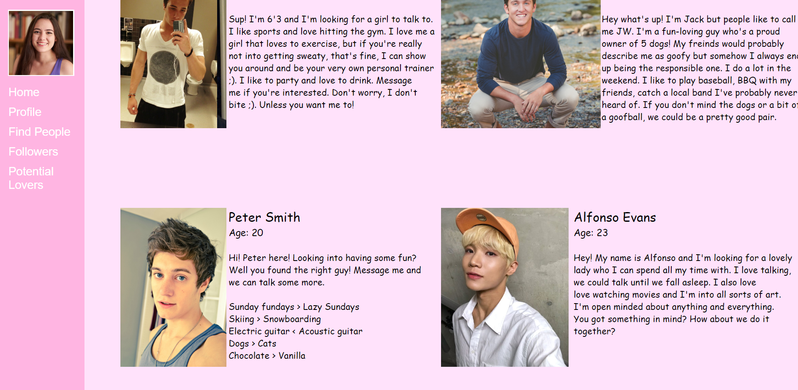
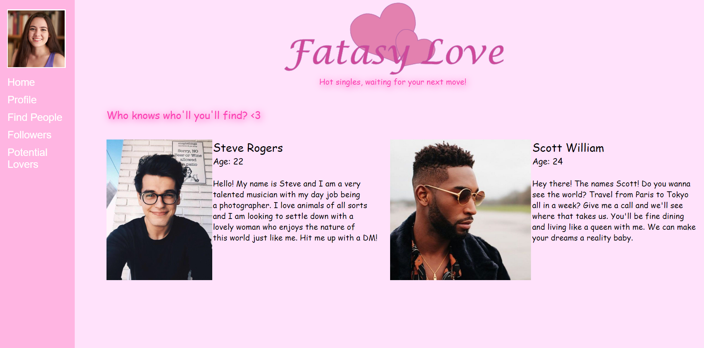

Critical Interactivity
Title: Fantasy Love
Medium:HTML/CSS Website


For this project, I decided to create a website that mimicked that of a dating website. I wanted to create an experience that felt similar to that of an actual dating website you might find online. My website captures most of the feel of an actual date site, but I added a twist to it all. When hovering over the profile pictures of online members, the pictures crossfade into another person.
The reasoning behind the picture alterations and my overall message of the project, was to show the viewer that people online aren't always the person they descirbe themselves to be or present themselves to be. This has become a major issue when it comes to online dating and relationships. Many are lied to when it comes to meeting new people online and building these online and long distant relationships. Anyone can share anything online, but it doesn't necessarily mean it's true.
Click here to view the website!